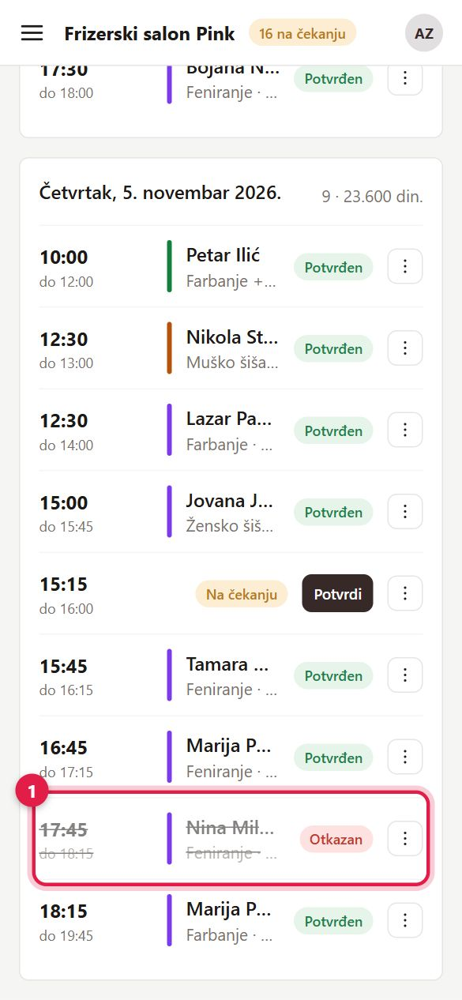
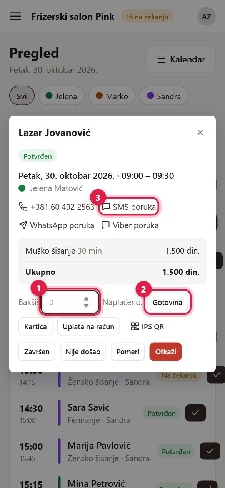
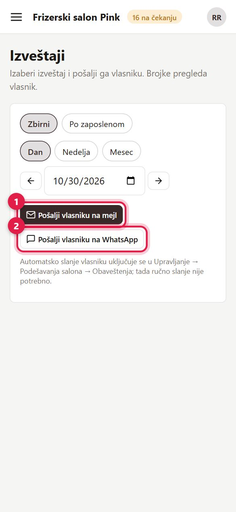

Ovo rade vlasnik i administrativni radnik. Radnik vidi samo deo — vidi Radnik.
1Pregled — dan na jednom mestu
Posle prijave otvara se Pregled: današnji termini, sledeći klijent, termini koji čekaju potvrdu i ko danas radi.
- 1 Filter „Svi" ili jedna osoba — vidite termine celog salona ili samo jednog zaposlenog. Ako i vi radite usluge, tu ste „Ja".
- 2 „Svi današnji termini" otvara listu današnjih termina.
- 3 „Završen" (na telefonu samo kvačica) se pojavi kod termina koji je počeo, a nije završen. Jednim klikom ga označite kao završen; naplatu i bakšiš zatim upišete klikom na termin.
- Druga slika (samo vlasnik): statistika za 7, 30 ili 90 dana — zarada, broj termina, popunjenost, najtraženije usluge, odakle dolaze klijenti. 1 „Prikaži grafikone" uključuje grafikone.


2Kalendar i novi termin
- 3 Prikaz: dan (kolona za svakog zaposlenog), nedelja ili mesec.
- 1 „+ Novi termin" — ili kliknite prazno mesto u kalendaru.
- Druga slika: 1 kucajte ime ili telefon klijenta i izaberite ga; ako ga nema, „+ Novi klijent". Zatim usluga, zaposleni, dan i vreme.
- 2 „Blokiraj vreme" zatvara vreme kada se ne zakazuje (pauza, lekar).
- Termin pomerate prevlačenjem na novo vreme ili kod drugog zaposlenog.
Kad se dogovorite sa klijentom, termin možete zakazati i van radnog vremena zaposlenog. Kalendar se tada sam proširi da se termin vidi.
Ako klijent često otkazuje ili ne dolazi, pri zakazivanju se pojavi upozorenje — termin i dalje možete da upišete.
Otvori u aplikaciji

3Potvrdite, završite ili otkažite termin
Meni → Termini (Danas, Sutra, 7 ili 30 dana).
- 1 Termin „Na čekanju": kliknite „Potvrdi" — klijent odmah dobija poruku.
- Kod termina koji je počeo, a nije završen, stoji dugme „Završen" (na telefonu kvačica).
- 2 „⋮" pored termina (druga slika):
- Završen — klijent je bio; klijent dobija poziv da oceni posetu.
- Nije došao — računa se u disciplinu klijenta.
- Otkaži (salon otkazuje) ili Klijent otkazao.
- Kontakt: Pozovi i SMS poruka postoje samo na telefonu; WhatsApp i Viber poruka rade i na računaru.


4Otkazani termini
1 Otkazan termin ostaje u listi, ali je posivljen i precrtan da se ne pomeša sa aktivnim. Njegov meni „⋮" i dalje radi — npr. „Vrati na potvrđen" ili poruka klijentu.
U kalendaru otkazane termine prikazujete prekidačem „Otkazani".

5Naplata i bakšiš
Kliknite termin na Pregledu ili u kalendaru — otvaraju se detalji.
- 1 Bakšiš — upišite ga pre naplate (nije obavezno). Bakšiš pripada radniku i ne ulazi u prihod salona.
- 2 Kliknite kako je plaćeno: Gotovina, Kartica ili Uplata na račun. „IPS QR" pokazuje QR kod sa iznosom.
- 3 Kontakt klijenta — na telefonu poziv i SMS, na računaru WhatsApp i Viber poruka.
Pogrešnu naplatu poništavate dugmetom „Poništi".

6Beleške za osoblje
Meni → Beleške (vide ih sve uloge, i radnici). Za stvari koje treba da znaju ostali: „nestalo je farbe 7.1", „pokvario se fen".
- 1 Napišite belešku.
- 2 Obavesti: uključeni su svi; kliknite ime da ga isključite. Oni sa katančićem uvek dobijaju obaveštenje (bira se u Podešavanja salona → Obaveštenja). Bledo ime nema email u Zaposleni, pa ne može da dobije obaveštenje.
- 3 Pošaljite.
- Ko je dobio belešku, klikne „Pročitano" — svi vide ko je pročitao.
- Ko se time bavi, klikne „Preuzimam" — svi vide „Preuzeo/la Ime", pa niko drugi ne kupuje istu farbu. „Ne preuzimam" vraća.
- Kad je gotovo, „Urađeno"; „Vrati kao otvoreno" je vraća.
Svi vide sve beleške. Broj pored „Beleške" u meniju je broj beleški koje još niste označili kao pročitane. Belešku briše autor, vlasnik ili administrativni radnik.
Otvori u aplikaciji
7Klijenti
Stranicu Klijenti vide vlasnik i administrativni radnik.
- 1 Pretraga po imenu, telefonu ili emailu.
- 2 „+ Novi klijent" — za klijente koji zovu telefonom. Kad se kasnije registruje istim emailom, vidi sve svoje termine.
- 3 Zone pouzdanosti: Svi / Zelena / Žuta / Narandžasta / Crvena. Poeni se skupljaju za kasna otkazivanja i nedolaske.
- Žuta — termin uvek čeka potvrdu, a nude se samo manje traženi sati.
- Narandžasta — online mu se ne nude slobodni termini (zakazuje pozivom).
- Crvena — nalog je suspendovan.
- „⋮" → „Istorijat i zona": svi dolasci i otkazivanja; tu ručno menjate zonu (npr. odblokirate klijenta).

8Recenzije
Ovde stižu ocene klijenata posle završenih termina. Možete da odgovorite (odgovor se vidi javno) ili da sakrijete neprikladnu ocenu. Vidi se i prosečna ocena po zaposlenom.
Otvori u aplikaciji
9Izveštaji
Vlasnik (prva slika):
- 1 Zbirni ili „Po zaposlenom", za dan, nedelju ili mesec.
- 2 „Otvori PDF", „Pošalji na mejl" ili „Pošalji na WhatsApp".
Administrativni radnik (druga slika) izveštaje ne vidi — izabere izveštaj i 1 „Pošalji vlasniku na mejl" ili 2 „na WhatsApp". Ako i sam radi usluge, ima i opciju „Moj pazar" sa svojim brojkama.
Automatsko slanje izveštaja vlasniku uključuje se u Podešavanja salona → Obaveštenja. Administrativni radnik automatske izveštaje ne dobija.
Otvori u aplikaciji

Česta pitanja
?Klijent kaže da nije dobio mejl
Neka proveri „Promocije" i „Neželjenu poštu". U Podešavanja salona → Obaveštenja → Dnevnik slanja vidite da li je poruka poslata. Za aktivaciju naloga vidi Prijava i nalozi.
?Zaposleni ide na odmor
U kalendaru „Blokiraj vreme" za te dane, ili ga u Zaposleni → „⋮" privremeno deaktivirajte.
?Ne vidim neki deo menija
Radnik vidi samo Pregled, Kalendar, Termine i Beleške. Administrativni radnik ne vidi finansijsku statistiku. Ako nekome treba više, vlasnik mu menja ulogu u Zaposleni → Nalozi za prijavu.